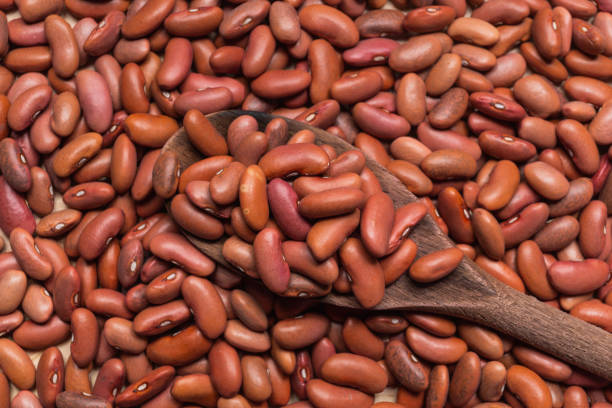

Фасоль является одной из самых распространённых бобовых культур. Её семена используются в пищу благодаря высокому содержанию белка.
Фасоль выращивается как на небольших приусадебных участках, так и в промышленных масштабах.
Посев проводят весной после окончания заморозков.
С июля по сентябрь.
Содержит большое количество белка, витаминов группы B и клетчатки.
Россия, Украина, Китай, Индия и страны Европы.
Лучше всего развивается в тёплом климате с достаточным количеством влаги.